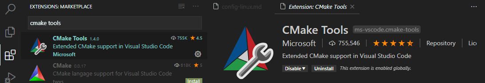
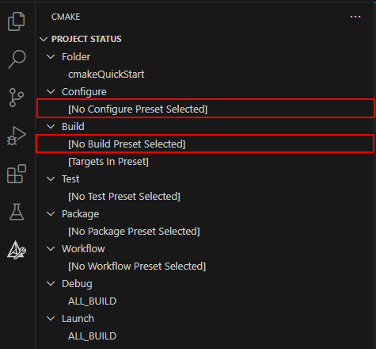
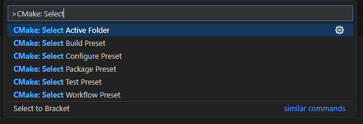
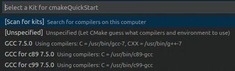
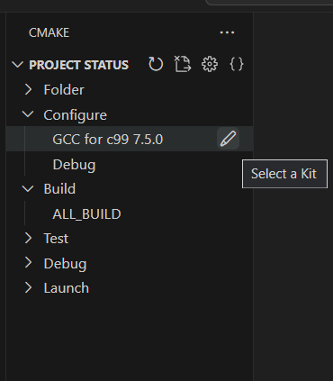
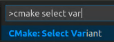
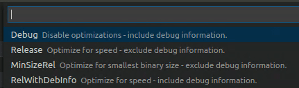
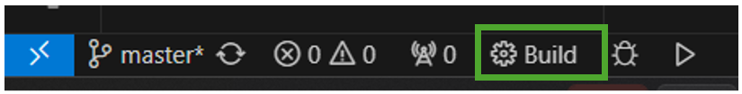
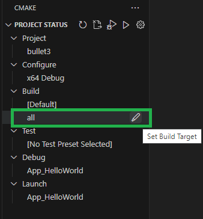
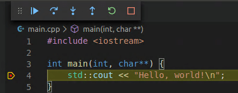

在 Linux 上开始使用 CMake Tools
CMake 是一个开源、跨平台的工具，它使用与编译器和平台无关的配置文件来生成特定于你的编译器和平台的原生构建工具文件。
CMake Tools 扩展将 Visual Studio Code 与 CMake 集成在一起，使你能够轻松地配置、构建和调试 C++ 项目。
在本教程中，你将使用 Visual Studio Code 的 CMake Tools 扩展在 Linux 上配置、构建和调试一个简单的 C++ CMake 项目。除了安装 CMake、编译器、调试器和构建工具之外，本教程中的步骤同样适用于你在其他平台（如 Windows）上使用 CMake 的方式。
如果你遇到任何问题，请在 VS Code 文档仓库中为本教程提交问题。此外，有关 CMake Tools 的更多一般信息，请参阅 CMake Tools for Visual Studio Code 文档
先决条件
要在 Ubuntu 上完成本教程，请安装以下内容：
- Visual Studio Code。
- VS Code 的 C++ 扩展。通过在扩展视图（
kb(workbench.view.extensions)）中搜索 'c++' 来安装 C/C++ 扩展。

- VS Code 的 CMake Tools 扩展。通过在扩展视图（
kb(workbench.view.extensions)）中搜索 'CMake tools' 来安装 CMake Tools 扩展。

- 你还需要安装 CMake、编译器、调试器和构建工具。
视频：什么是构建系统？如何将 CMake 添加到你的项目中？
观看此视频，了解构建系统何时能帮助你以及如何为你的项目设置 CMake，或按照以下部分中的步骤操作。
确保已安装 CMake
VS Code CMake Tools 扩展通过使用系统上安装的 CMake 来完成其工作。为获得最佳效果，请使用 CMake 3.27 或更高版本。
查看系统上是否已安装 CMake。打开终端窗口并输入以下命令：
cmake --version要安装 CMake，或者如果你至少没有 3.27 版本而要获取更高版本，请参阅 Kitware APT Repository 上适用于你平台的说明。安装 3.27 或更高版本。
确保已安装开发工具
虽然你将使用 VS Code 编辑源代码，但你需要使用系统上安装的编译器、调试器和构建工具（如 make）来编译和调试源代码。
对于本教程中的 Ubuntu，我们将使用 GCC 编译器、GDB 进行调试，以及 make 来构建项目。这些工具默认未安装在 Ubuntu 上，因此你需要安装它们。幸运的是，这很简单。
检查是否已安装 GCC
要查看系统上是否已安装 GCC，请打开终端窗口并输入以下命令：
gcc -v如果未安装 GCC，请从终端窗口运行以下命令来更新 Ubuntu 软件包列表。过时的 Linux 发行版可能会影响获取最新的软件包。
sudo apt-get update接下来，使用以下命令安装 GNU 编译器、make 和 GDB 调试器：
sudo apt-get install build-essential gdb创建 CMake 项目
如果你没有现有的 CMake 项目，请按照创建 CMake 项目中的步骤操作。
如果你已经有一个现有的 CMake 项目，且其根目录中有一个 CMakeLists.txt 文件，请继续配置 Hello World以配置你的项目。
配置 Hello World
在使用 CMake Tools 扩展构建项目之前，你需要对其进行配置，以了解系统上的编译器。在 VS Code 中有两种配置 CMake 的方式：
- 使用 CMake Presets（推荐）
- 使用 CMake Kits/Variants
使用 CMake Presets 进行配置
我们建议使用 CMake Presets 来管理你的 CMake 配置。CMake Presets 使你能够指定一个通用的 JSON 文件，在其中存储项目的所有配置。然后，你可以跨不同的 IDE 和不同的操作系统与他人共享此文件。
如果你按照创建 CMake 项目中的步骤创建了项目，则你的项目已配置为使用 CMake Presets。
如果你的项目有一个 CMakePresets.json 文件，你可以使用 Configure 和 Build 预设来指定如何在你的机器上构建项目。
你可以在 CMake Tools 视图的Configure和Build节点下的 Project Status 中查看预设的活动配置。你可以随时选择这些节点来设置或更改你的 Configure 和 Build 预设。

你还可以通过在命令面板（kb(workbench.action.showCommands)）中运行CMake: Select Configure Preset或CMake: Select Build Preset命令来设置你的预设。

使用 CMake Kits 进行配置
如果你的项目没有 CMakePresets.json 文件，则需要使用工具包（kits）。工具包代表一个工具链，即用于构建项目的编译器、链接器和其他工具。
要扫描工具包：
- 打开命令面板（
kb(workbench.action.showCommands)）并运行CMake: Select a Kit。该扩展会自动扫描你计算机上的工具包，并创建系统上找到的编译器列表。 - 选择你要使用的编译器。例如，根据你安装的编译器，你可能会看到类似以下内容：

先前选择的工具包现在显示在 CMake Tools 视图的Project Status部分中。

要更改工具包，你可以在 CMake Tools 视图的Project Status部分中选择工具包，或从命令面板再次运行CMake: Select a Kit命令。如果你没有看到你正在寻找的编译器，你可以编辑项目中的 cmake-tools-kits.json 文件。要编辑该文件，请打开命令面板（kb(workbench.action.showCommands)）并运行CMake: Edit User-Local CMake Kits命令。
然后，你需要选择一个变体（variant）。
变体包含如何构建项目的指令。默认情况下，CMake Tools 扩展提供了四个变体，每个变体对应一个默认的构建类型：Debug、Release、MinRelSize和RelWithDebInfo。这些选项的作用如下：
Debug：禁用优化并包含调试信息。
Release：包含优化但不包含调试信息。
MinRelSize：针对大小进行优化。不包含调试信息。
RelWithDebInfo：针对速度进行优化并包含调试信息。
要选择变体，请打开命令面板（kb(workbench.action.showCommands)）运行CMake: Select Variant命令。

选择Debug以在构建中包含调试信息。

选定的变体将显示在状态栏中活动工具包的旁边。
CMake: Configure
现在你已经通过预设或工具包/变体选择了你的配置设置，打开命令面板（kb(workbench.action.showCommands)）并运行CMake: Configure命令来配置你的项目。这将使用你选择的配置在项目的构建文件夹中生成构建文件。
构建 hello world
配置项目后，你就可以进行构建了。打开命令面板（kb(workbench.action.showCommands)）并运行CMake: Build命令，或从状态栏中选择Build按钮。

你可以通过从命令面板中选择CMake: Set Build Target来选择要构建的目标。默认情况下，CMake Tools 会构建所有目标。选定的目标将显示在 CMake Tools 侧边栏中Build节点下的Project Status视图中，也可以从那里进行设置。

调试 hello world
要运行和调试你的项目，请打开 main.cpp 并在 std::cout 行上设置一个断点。
然后打开命令面板（kb(workbench.action.showCommands)）并运行CMake: Debug。调试器将在 std::cout 行停止：

继续按 kb(workbench.action.debug.start) 以继续执行。
你现在已经使用 VS Code CMake Tools 扩展在 Ubuntu 上通过 CMake 构建和调试了一个 C++ 应用。对于其他平台，步骤是相同的；不同之处在于如何为你选择的平台安装 CMake 和编译器/调试器。有关为其他平台设置编译器/调试器的说明，请参阅以下内容：